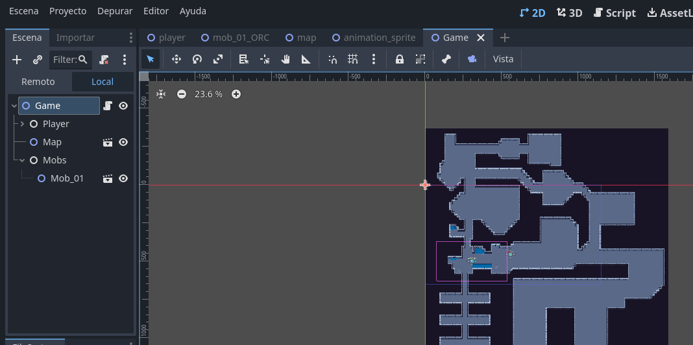
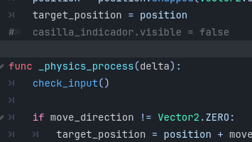
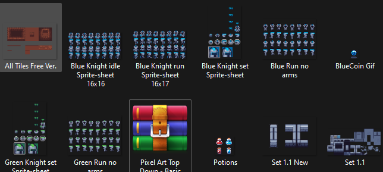

Inspirado en el famoso juego MATERICK, un juego de mi profesor de matemáticas el cual usa como evaluacion de conocimientos. Este es un proyecto en progreso (aunque está en una etapa muy temprana), es un juego estilo Pixel-RPG que tiene como objetivo poner retos de programación para avanzar.
Ya cree un pequeño mapa.
Tengo cosas muy basicas codificadas, como el movimiento y algunas colisiones.
Hasta ahora solo he utilizado sprites gratuitos de Itch.io
